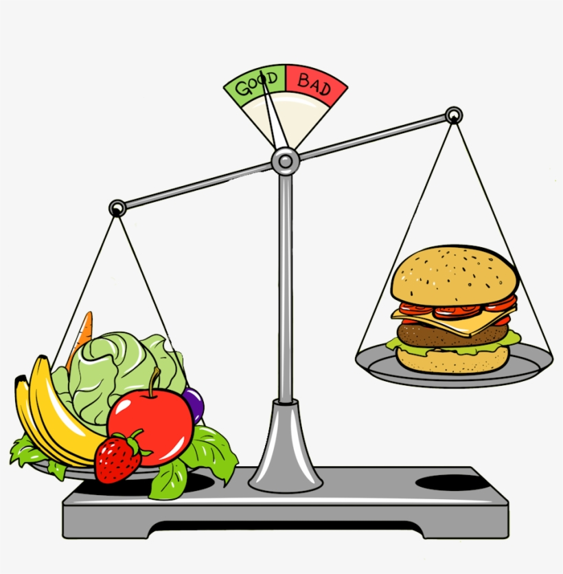

Energia: our health helper
Unhealthy lifestyles are becoming more common among young people.
The time box below is exactly where you are right now.
Think about the question/suggestion below and take actions.
Today, Energia shares this specific healthy tip with you: skip rope everyday.
Rope skipping is an easy-to-learn, moderate-to-high intensity type of aerobic exercise(Lin Zongyu et al., 2023).
Click
Lin, Zongyu, et al. "High-fiber diet and rope-skipping benefit cardiometabolic health and modulate gut microbiota in young adults: A randomized controlled trial." Food Research International 173 (2023): 113421.
pictures from Wikipedia.com